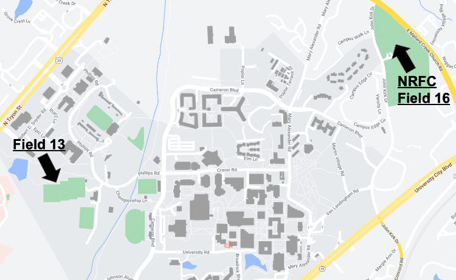

We usually train on Tuesday and Thursday nights from 8pm-10pm on Field 16 at NRFC (Northeast Recreational
Field Complex) with a game (or two) each weekend. In addition, we also look to participate in tournaments
hosted by other schools once a semester. Due to the size of our club, we currently have players separated
into 3 different "teams" (gold, green, and white), however these teams are only for the purpose of game
time, and all players practice on the same field at NRFC. Gold Team games are scheduled by the league,
home games are played at Field 13 on campus near the baseball and softball fields, and green and white
team games are scheduled whenever we are able to get in touch with other schools and their secondary teams.
